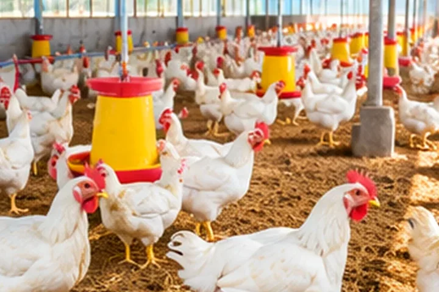
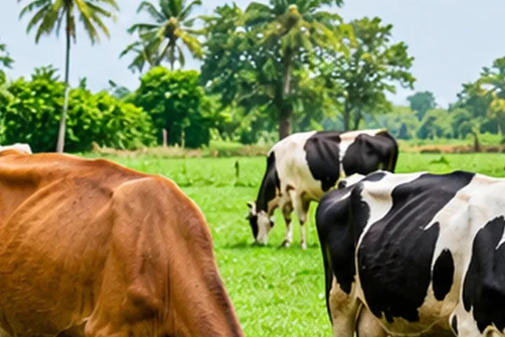
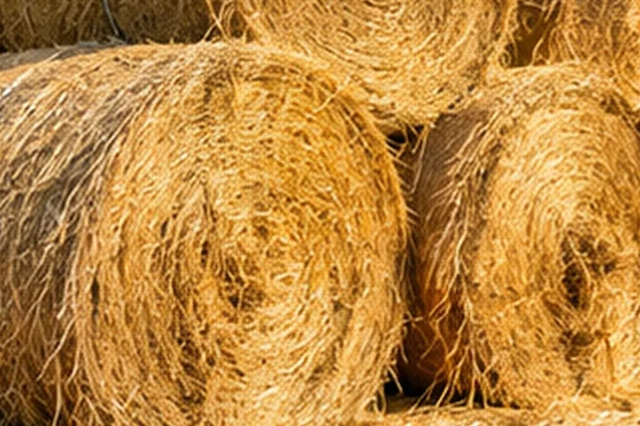

Home / Products
Farm essentials, made easy to explore.
Browse useful product categories for livestock nutrition, animal wellbeing and everyday farm work.
PRODUCT RANGE
Find your farm essentials
A focused range of categories, organized around how farms work.
Use these categories as a starting point. Contact our team for availability, product details and guidance on the right option for your requirements.
SHOP BY CATEGORY
Products for everyday farm needs



CHOOSING WITH CONFIDENCE
Clear information before you decide.
Product suitability depends on your animals, setup and intended use. Share your requirements with our team so you can make an informed choice.
Ask a product questionLOOKING FOR SOMETHING SPECIFIC?
Tell us what your farm needs.
Send a product name, category or requirement and we’ll help you with the next step.
AROUND THE FARM
Products meet real-world routines
Nutrition
Feed and fodder categories for everyday planning.
Wellbeing
Practical essentials for routine livestock care.
Operations
Supplies that support preparation and field work.
BUILT AROUND THE WORK
From the store room to the field.
Farm supplies are most useful when they fit the way work happens. Explore the stages below to see how everyday essentials support preparation, animal care and seasonal activity.
01 / PREPARE
Plan the essentials
Keep feed, fodder and routine supplies organised around the needs of your animals and the season.
02 / SUPPORT
Care for the herd
Choose relevant products with attention to clean spaces, suitable feeding and dependable daily routines.
03 / MAINTAIN
Keep work moving
Think ahead about the tools and practical supplies that help keep farm operations on track.
NEED HELP CHOOSING?
Find the right category with confidence.
Share your product requirements and we’ll help you understand the options available for your farm.
Ask about products